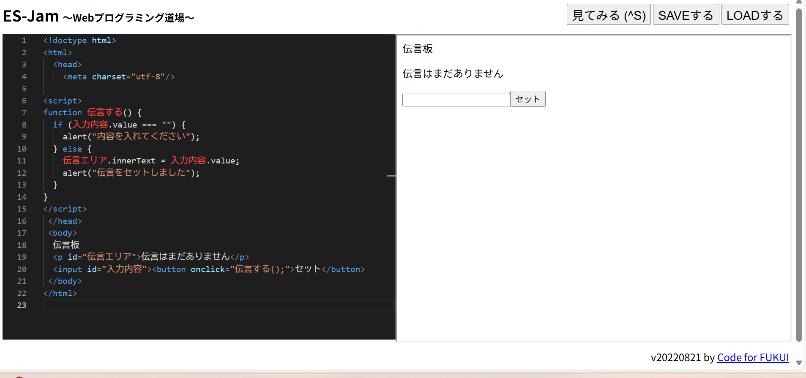

3-2 JavaScript体験：伝言プログラムを作る

伝言板
1.内容
＜input>や＜button>で入力ボックスを作り、JSプログラムを用いてボタンを押したねを表示させ、伝言板を初期段階に仕上げる。
次に、＜value＞やinnerTextを使い入力したものや段落の内容をプログラミングする。
またif,elseを使い文字が入力されなかった場合のプログラミングもする。最後に＜html＞や＜head>,＜body＞を使い世界標準に仕上げる。
2.感想
一文字でも間違えると、エラーを起こしプログラミングがダメになってしまうので、注意深くhtmlタグを打つのが時間がかかって大変だった。
慣れるためにどんどんタグを打ち込んでいこうと考えた。